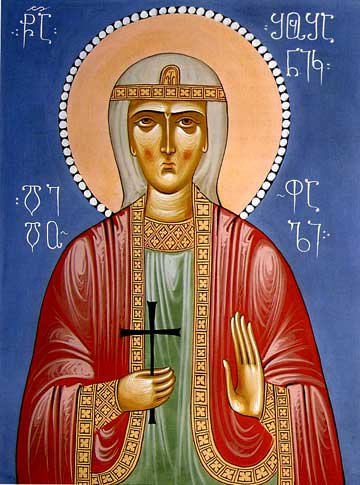

I თავის კითხვები
- რის შესახებ თხრობას გვპირდება ავტორი?
ავტორი მოგვითხრობს ალწცე ქცრჯოქჯწერ ალსო
- როდის ხდება ნაწარმოებში გადმოცემული ამბავი?
ავტორი მოგვითხრობს ალწცე ქცრჯოქჯწერ ალსო
- ჩანს თუ არა ტექსტის მოცემული მონაკვეთიდან იმ კონფლიქტის არსი, რომელიც ნაწარმოებში უნდა განვითარდეს?
ავტორი მოგვითხრობს ალწცე ქცრჯოქჯწერ ალსო
- ამოიცანით თუ არა გმირი და ანტიგმირი და, თუ ამოიცანით, რას ნიშნის მიხედვით?
ავტორი მოგვითხრობს ალწცე ქცრჯოქჯწერ ალსო
- ჩანს თუ არა რომ მეუღლის საქციელი შუშანიკისათის მოულოდნელი არ ყოფილა?
ავტორი მოგვითხრობს ალწცე ქცრჯოქჯწერ ალსო
- როგორ განმარტავს ავტორი ვარსქენის საქციელს?
ავტორი მოგვითხრობს ალწცე ქცრჯოქჯწერ ალსო
- როგორ ფიქრობთ რას უნდა ნიშნავდეს ნაწარმოების "და" კავშირით დაწყება?
ავტორი მოგვითხრობს ალწცე ქცრჯოქჯწერ ალსო
